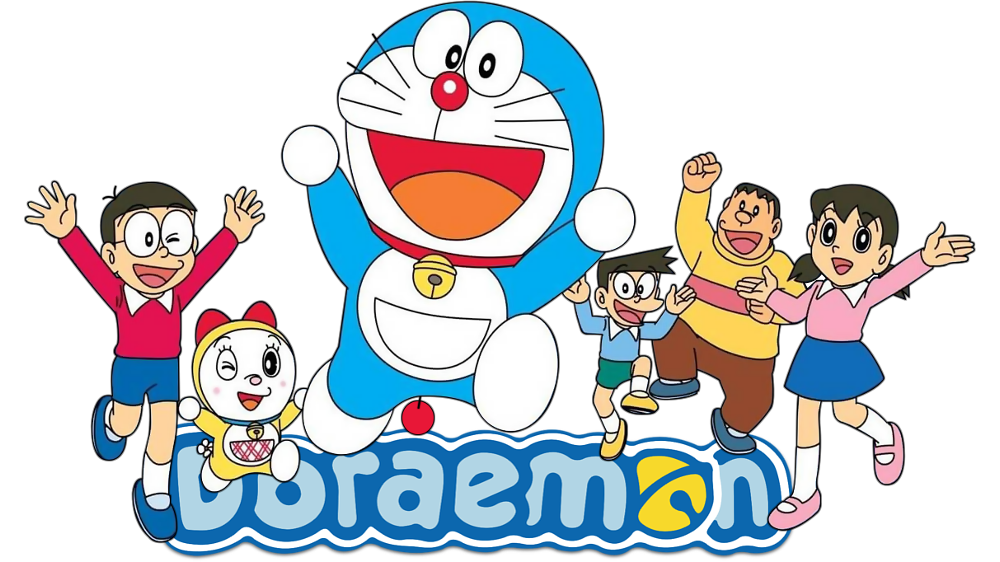
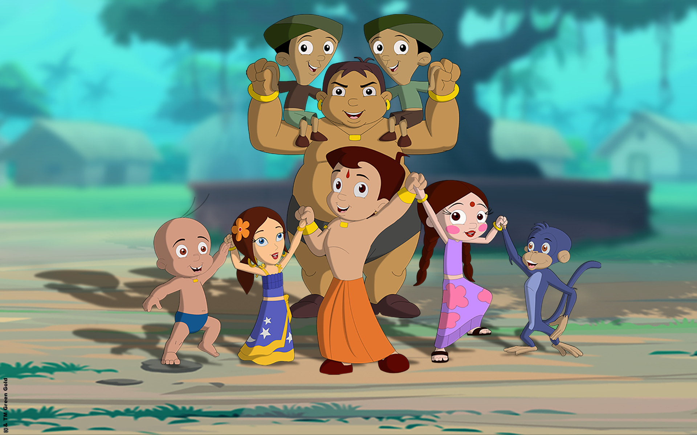
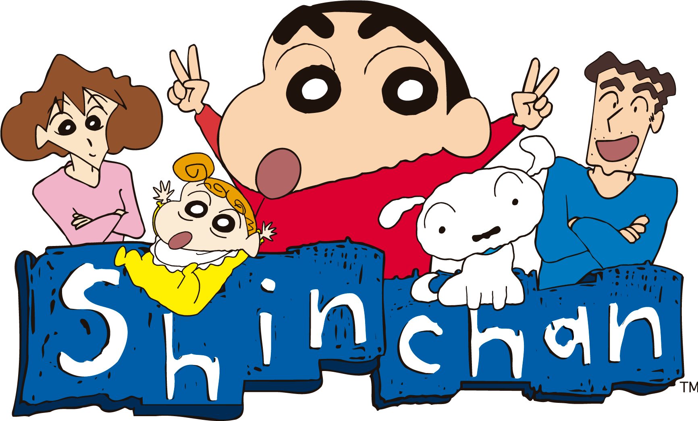
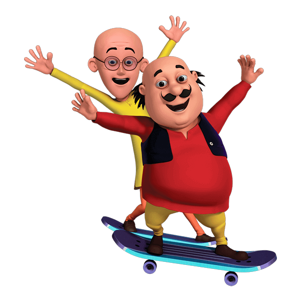

Tom and Jerry is an American animated media franchise and series of comedy short films created in 1940 by William Hanna and Joseph Barbera. In its original run, Hanna and Barbera produced 114 Tom and Jerry shorts for MGM from 1940 to 1958. During this time, they won seven Academy Awards for Best Animated Short Film, tying for first place with Walt Disney's Silly Symphonies.
2. Doraemon

Doraemon (Japanese: ドラえもん [doɾaemoɴ]) is a Japanese manga series written and illustrated by Fujiko Fujio. The manga was first serialized in December 1969, with its 1,345 individual chapters compiled into 45 tankōbon volumes and published by Shogakukan from 1970 to 1996. The story revolves around an earless robotic cat named Doraemon, who travels back in time from the 22nd century to aid a boy named Nobita Nobi.
3. Chota Bheem

Chhota Bheem is an Indian animated comedy adventure television series, created by Green Gold Animations based in Hyderabad.Bheem is a brave, strong and intelligent young boy. He often manages to solve everyone's problems which endears him to the townspeople of Dholakpur.
4. Mickey Mouse
Mickey Mouse is a cartoon character created in 1928 by Walt Disney, and is the mascot of The Walt Disney Company. An anthropomorphic mouse who typically wears red shorts, large yellow shoes, and white gloves, Mickey is one of the world's most recognizable fictional characters.
5. Sinchan

Crayon Shin-chan (Japanese: クレヨンしんちゃん Hepburn: Kureyon Shin-chan), also known as Shin Chan, is a Japanese manga series written and illustrated by Yoshito Usui. It follows the adventures of the five-year-old Shinnosuke "Shin" Nohara and his parents, baby sister, dog, neighbours, and friends and is set in Kasukabe.
6. Mr. Bean
Mr. Bean is a British sitcom created by Rowan Atkinson and Richard Curtis, produced by Tiger Aspect and starring Atkinson as the title character. The sitcom consists of 15 episodes it was co-written by Ben Elton. The series was originally broadcast on ITV, beginning with the pilot on 1 January 1990 and ending with "The Best Bits of Mr. Bean" on 15 December 1995.
7. Motu Patlu

Motu Patlu is an Indian animated sitcom television series written by Niraj Vikram for Nickelodeon India. It focuses on two friends, Motu and Patlu, living in a fictional town called Furfuri Nagar. Motu Patlu is directed by Suhas Kadav and produced by Deepa Sahi and Anish J.S. Mehta. It is one of the most popular children's shows in India.